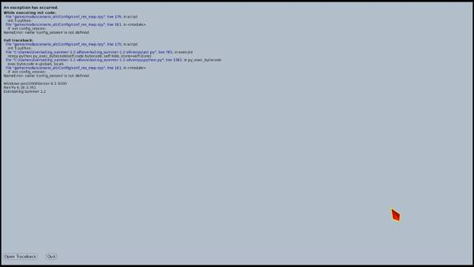

BlackMazeGOD написал(а):
обстакановку
Обычный авторский приём же. Не ошибка, не опечатка.

7 дней лета |
Вы здесь » 7 дней лета » Последние версии сценария » 7 дней лета, v.031e (Мику-7дл, эпилог)

обстакановку
Обычный авторский приём же. Не ошибка, не опечатка.

Код:27386 if persistent.mi_7dl_good_star or persistent.mi_7dl_good_hum:persistent.mi_7dl_good_humAN, иначе условие не стреляет
Код:10706 me "Я всё сказал. Я не хочу никого подставлять или допускать, чтобы моим действитем или бездействием кому-то был причинён вред."чтобы моим действием
Код:16023 "Видок, наверное, у меня был тот ещё, потому что Славя весело расмеялась:"Славя весело расСмеялась
Код:7905 - 7909 scene "Девочка открыла глаза." "Проверила ещё раз базы данных — несколько кластеров вышли из строя, но запасных винчестеров хватало." "Проверила системы жизнеобеспечения — на поверхности бушевал радиоактивный шторм и системы очистки воздуха трудились вовсю." "Всё шло в штатном режиме."
На месте scene потеряли cg, похоже.
Отредактировано BlackMazeGOD (2017-03-24 22:19:55)


text_mi_7dl.rpy
1196 Но чтобы никаких «рыбных» магазинов и «гастрономов», хорошо?
Лучше «Но чтобы никаких «рыбных магазинов» и «гастрономов», хорошо?»
1227 Она бы долго ещё смеялась, но ту за моей спиной скрипнули тормоза, и чей-то незнакомый голос позвал:
«Тут».
1270 Да нет, я про то что…
1292 Мы всё равно возвращаемся в лагерь, так что придерживаемся первоначального плана: едем на машине Виолетты Церновны, а там уже и станем думать что, куда и как.Нужна запятая перед «что».
1287 Без «но». {w}Спроси у своей Сакишиты, как бы он отнёсся, если бы ты так же сбежала от его надзора?
Если не эрратив, то лучше «своего».
1307 В таком случае, я отправлюсь в лагерь, чтобы утрясти все формальности и буду ожидать вас там. До скорой встречи.
1543 Настроен он оказался весьма решительно - достав из кармана бандуру, в которой я с удивлением признал спутниковый телефон, тут же набрал номер, начинающийся с единицы и отдал туда несколько коротких приказаний.
3423 Оттуда донёсся скрип кровати, кряхтенье человека, отскребающего себя от кровати и…Нужна запятая перед «и».
1341 Без долгих расшаркиваний, Виола завела машину на территорию лагеря и, поставив ту у столовой, немедленно отчалила домой.
1585 На всякий случай, мы оба решили проконтролировать, чтобы он обязательно уехал.
1989 И, похоже, сейчас было самое время немного попредаваться унынию и остракизму.Не нужна первая запятая.
1372 Отряхнув скамейку от налетевшей хвои и шишек, я устроился с максимальным комфортом и обнаруженной здесь палочкой, стал чертить всякие непотребства на песке.
Не нужна последняя запятая.
1497 Мику почему-то так и сидела на крылечке собственного дома, вместо того, чтобы добросовестно отсыпаться.
Лучше либо убрать первую запятую, либо заменить на тире.
1543 Настроен он оказался весьма решительно - достав из кармана бандуру, в которой я с удивлением признал спутниковый телефон, тут же набрал номер, начинающийся с единицы и отдал туда несколько коротких приказаний.
Возможный глюк: единица — это США же.
1736 Мы с тобой ни много, ни мало, спасли товарища. Мы же герои практически.
Не нужны запятые.
1748 Мороженое, которым она меня кормила семь часов назад безвозвратно усвоилось и впиталось стенками кишечника.
Нужна запятая после «назад».
1772 "Вместо этого она заняла столик для персонала и предавалась чревоугодию. "
1856 "Получив мой кивок в качестве согласия, она снова обрадованно улыбнулась и улетучилась прочь из столовой. "Лишний пробел после точки.
1802 Ага… Мику, не скажешь мне, что там за фиговину тебе твой престарелый китаец притащил?
Глюк логики: после поездки с Мику в райцентр ничего ГГ такого не видит, чтобы Сакишита для Мику тащил.
1829 Ты знаешь, что в слове «бдсм» первая буковка обозначает «бондаж» или то самое связывание?
Лучше «БДСМ». И почему бы тут не ввернуть и про шибари/сибари — оно же японское эротическое связывание?
1837 Что-то связанное со сценой?
Нужна запятая после «что-то».
1842 Мало ли у кого какие тайны.
Глюк логики: не вяжется с предыдущим разговором 1812—1827. Лучше выбросить или заменить на что-то типа «Со временем узнаю.»
1923 mt "Вы разве не вместе ездили в город?"
1924 me "Да. И?"
1925 mt "Вместе совершили подвиг, трудности вас сплотили."
2042 Поездка и дальнейшие разборки с агентом порядком вымотали девчонку.Возможный глюк логики: вместе ездили только при alt_day3_mi_donor, но проверки нет.
1955 И если смотреть со стороны на карту какой-нибудь Ренрен или Вайбо, то города усыпаны отметочками людей активных в сети.
Нужна запятая перед «активных».
2071 и далее
Выбор совершенно не очевиден: после фразы «Мне остаётся либо смириться с этим, либо…» выбор «И что я могу сделать?» как-то слабо ассоциируется со смирением, скорее с «Так, что же конкретно я могу сделать, чтобы разрешить эту ситуацию». Второй вариант «Как-то это неправильно.» вообще ни о чём, он никак не свидетельствует о решимости что-то сделать.
2084 Если я сейчас уйду, я по сути, оставлю её одну здесь.
Нужна запятая после второго «я».
2527 … либо…
Лишний пробел после многоточия.
2727 Ты имеешь права сделать мне больно - я слишком долго не приходил.
«Право».
2766 Я чуть не спросил «что мог?», но проблески интуиции дали понять, что этим вопросом я закопаю себя ещё глубже.
«Я чуть не спросил: «Что мог?», но проблески интуиции дали понять, что этим вопросом я закопаю себя ещё глубже.»
2771 Мику расстроилась, и собиралась взыскать с меня за каждую секунду своего испорченного настроения.
Лучше тире вместо запятой.
2798 Что же ты тогда.
Лучше многоточие вместо точки.
2833 Пришлось несколько секунд моргать, прежде чем глаза приспособились пусть и к неяркому дневному свету - после чулана он казался болезненно ярким.
Лучше «пусть и к тусклому, но дневному свету» — дальше есть «ярким».
2859 Наконец ей терпение лопнуло:
«Её».
2881 Сенечка, я знаю, что Петербург и Лениград - это одно и то же!
Если не специально, то «Ленинград».
2894 Вопрос был с подковыркой, изобретательно заданный. Вроде тех, на которые невозможно ответить однозначно: «вы перестали избивать жену?»
Капитализация, «Вы».
2910 Я вскочил со вскриком - Мику уже оставила между нами недвижимое (скамейку) и сложив ладошки над головой, приговаривала:
3552 Она шутливо потянулась ко мне, я так же шутливо отшатнулся и громыхая чем-то в пакетах, выскочил на улицу.Нужна запятая после «и».
2916 Не получится. Я буду зорко следить, хорошо прятаться и кидаться томагавка… Ой
Нужно многоточие в конце.
2972 Хентаи! Сенечка гнусный извращенец!
Нужно тире после «Сенечка».
2974 Она пару секунда сжимала кулаки, колебаясь: в ней говорили сразу два начала.
«Колеблясь».
3358 "И вот когда вся грязь, что копится в тебе дойдёт до нужного градуса кипения, заставляя тебя визжать от ненависти и совершать непоправимые поступки — тебя, ты уверен, будет ждать волшебный мир. "
Нужна запятая после «тебе», и лишний пробел после точки.
3589 Мне предоставили пищу для размышления… вернее, предоставляли её последние два часа.
Если не специально, то лучше «размышлений».
Отредактировано Melirius (2017-03-27 14:11:23)

V
Код:9298 if alt_day2_rendezvous == 2: "Славя была права!"При alt_day1_sl_keys_took != 0 в предыдущем диалоге о физруке говорит также Славя, а не Ульяна, однако такой проверки нет. Заменить на
if (alt_day1_sl_keys_took != 0) and (alt_day2_rendezvous == 2):
Код:706 "Это как раз перед обедом позавчера случилось. Кстати, а что тогда произошло?"Судя по предыдущему диалогу, об этом говорит Лена. Не хватает un перед речью.
M
Код:12499 "Наверное, только Пигмалион, вроде меня, мог сотворить такую Галатею.""вроде меня" не обособляется.
Код:2429 "Тут моё внимание привлекло некое шевеление на рядах со стороны Ульяны — там два пионера, на повышенных тонах о чём-то спорили."Стилистически лучше без запятой после "два пионера"
Отредактировано Gr0m (2017-03-25 20:10:27)
"вроде меня" не обособляется.
На самом деле, всё куда сложнее, чем кажется. Есть понятие авторской пунктуации, используемой для интонационного выделения чего-то в тексте.
Поэтому здесь имеет место дополнительное смысловое выделение конструкции вроде меня, полчеркивающее сравнение с Пигмалионом.
Наверное, только Пигмалион, вроде меня, мог сотворить такую Галатею
Пример из Сыч-рута тоже можно рассмотреть под этим же углом.
Хуже, когда запятых нет вовсе.
Код:7288 "Она отошла к столу, где, как я помнил, хранились некоторые крайне любопытные вещи."Странно видеть этот текст, когда в принципе еще в столе не шарился/не проходил рут Унылки.
Поправьте если ошибаюсь, но "интересное" содержимое стола только там всплывает, вроде.
По крайней мере, перечитывая руты еще нигде про "интересное" содержание стола не говорилось.Код:call alt_7dl_titles $ renpy.pause(2) return if alt_day6_sl_arc == 1: jump alt_day8_sl_postscriptum else: pause(1) returnПеред if alt_day6_sl_arc == 1 return явно лишний. Условие не стреляет, даже если выполнено.
Отредактировано BlackMazeGOD (2017-03-28 12:37:54)
Я совсем запутался, мне старую версию 7дл удалить, потом поставить новую, а поверх ещё наложить этот ваш хостфикс? Или как???

Я совсем запутался, мне старую версию 7дл удалить, потом поставить новую, а поверх ещё наложить этот ваш хостфикс?
Так.
alt_route_sl_cl
Нашел старославянское слово "уховать", но оно имеет другое значение. Что же за диалект такой?
Код:7324 "Пиво она уже куда-то уховала — талант не пропьёшь!"
Спрайт не соответствуетКод:7367 if (alt_day4_sl_lf_solo == 0) or (alt_day4_sl_lf_solo == 4): 7368 "Она улыбнулась и положила голову мне на плечо."
которыйКод:7927 dreamgirl "Брак, паря, это такой институт, которые придумали импотенты с угасшей полигамией молодости."
Лишняя запятая после "теперь вот"Код:9148 th "Почему нет? Мы купались вместе, гуляли, теперь вот, она меня в какой раз от голодной смерти спасает."
Содержание кислорода влияет на все процессы окисления с его участием. С повышением этого значения заметно увеличится скорость коррозии, пожары станут чаще, и их станет труднее тушить - это только то, что лежит на поверхности. С органикой всё сложнее, предсказать разницу в эволюционных процессах вряд ли кто возмётся. Так что мир с таким отличием был бы не похож на наш.Код:9635 if alt_day_binder != 1: 9636 dreamgirl "Это не говоря уже о таких вещах, как местное небо и процент кислорода в атмосфере." 9637 th "А с ним-то что?!" 9638 dreamgirl "Эйфория, состояние постоянно навеселе, обострённое восприятие." 9639 show dreamgirl_overlay with flash 9640 dreamgirl "Чувак, это симптомы кислородного опьянения. Так что здесь процентов тридцать в воздухе, не меньше."
ЭдакийКод:9709 "Эдакой синтез из дружбы, романтики, боя и сопричастности к большему."
Да как ты можешь?!Код:10731 sl "Да как ты можешь. Ты не понимаешь, что бесчеловечно делать так?!"
как хорошо, что ты пришлаКод:12338 mi "Алисочка, Алисочка, как хорошо что ты пришла, а то я думала, ты забыла или не хочешь и вообще передумала! Я чуть было вместо тебя кого-то другого не поставила."
сомненияКод:12557 "Не то, чтобы я очистил её совесть полностью, определённые сомнение в её душе всё-таки остались."
Под условие бы спрятатьКод:12959 dreamgirl "А как же Ульяна и обливание?" 12960 th "Ну… Там мне помогли опростоволоситься. А я в зачёт принимаю только случаи, где я напортил сам."
ПодглядывалаКод:14381 th "Поглядывала, наверное. Не могла же Славя ей всё рассказать?"
рассеянностьКод:11958 "В результате каких-то сдвигов в психике, а может быть, просто из-за предрасположенности, у него проявились некоторые психические проблемы — лунатизм, расеянность, эпилепсия…"
Мы ничего не слышали про эту историю, если проходили по инт веткеКод:16473 "А лагерь и правда закрыли — очкарик добился своего." 16474 "Вернее сказать, его семья добилась своего, закрыла историю, в результате которой двое погибли, одна сошла с ума, а одна в тридцать один год ходит с седыми висками." 16475 "Хотя Виолу и нельзя причислить к семье Трофимовых — всё же она была ученицей матери Шурика, а позже — его психиатром." 16476 "Хотя она не сдалась — даже организовала своего рода фонд помощи детям-савантам, негласно спонсируемый бывшей конторой Бориса Александровича."
настолько, что дажеКод:16555 "В этот раз он владелец голоса обнаглел настолько что даже тронул меня за плечо."
Под if alt_day4_sl_tut_izКод:1575 "Каким-то образом, почти не пользуясь фонарём, я умудрился добраться так далеко, двигаться так долго."
"Знакомые симптомы" обозначены не во всех веткахКод:4354 me "Плюс все эти сомнительные вещи на территории…" 4355 if alt_day4_sl_tut_iz: 4356 me "Хотя я отказался от обследования, не уверен, что там и в самом деле всё хорошо." 4357 me "Просто не хочу создавать лишних проблем. {w}До отъезда как-нибудь продержусь, и ладно." 4358 else: 4359 me "Плюс я говорил с Шуриком ночью." 4360 "Саныч, до этого момента хмурящийся, сразу успокоился." 4361 "Кивнул:" 4362 show ba smile uniform with dspr 4363 ba "А, понятно. И ты думаешь, что он первый, кто увидел этого странного мужика?" 4364 if alt_day4_fz_sh == 2: 4365 me "Мужика?" 4366 ba "Он тебе не рассказал?" 4367 "Саныч поскрёб щетину на подбородке и решил:" 4368 ba "Тогда забудь." 4369 "Ещё одна тайна, которую я не собираюсь трогать и трёхметровой палкой." 4370 else: 4371 ba "Или тебя больше пугает то, что под лагерем можно добраться до бомбоубежища?" 4372 "Я снова покачал головой." 4373 me "Меня смущают всякого рода побочные эффекты этих походов." 4374 "Я рассказал ему про карту, про то, как ориентировался в подземелье, как воспринимал информацию, как будто положенную на дальнюю полку за ненадобностью." 4375 show ba em1 uniform with dspr 4376 ba "И это тоже знакомые симптомы."
"Я девочка, ты — мальчик" - должно быть наоборот, или я чего-то не понимаюКод:4486 "Мне надо было найти Славю и как-то убедить её пойти со мной в некие мифические туннели." 4487 dreamgirl "Я девочка, ты — мальчик! Пойдём со мной в подвал!"
Если первый раз ходили одни, набросков нетКод:8461 "Она, помнится, поправляла меня, когда мне нужно было поворачивать. И наброски плана местности у неё тоже были."
Пропущено сказуемое, из контекста непонятно, какоеКод:8467 "Так что вряд ли ради того, чтобы посмотреть на пустую пещеру."
Если не среагировали из-за недостатка воли, то были там до и в процессеКод:11394 cs "Ладно, что случилось?" 11395 me "Трудно сказать, я пришёл к шапочному разбору." 11396 me "Но, похоже, стукнулась головой и…"
х2 Решился наконецКод:11982 "Решился наконец." 11983 "Опрокинул в горло стакан, зажмурился, покраснел, схватил банку с водой." 11984 "Кадык быстро-быстро заходил вверх-вниз, пока Шурик запивал послевкусие." 11985 stop music fadeout 3 11986 "Решился наконец."
свояКод:12092 "У которой, оказывается, свой долгая-долгая история про мальчика в смешных очках, способного сосчитать всё на свете."
кленовых http://dic.academic.ru/dic.nsf/ushakov/834738Код:16699 "Для того, чтобы захотеть чего-то, нужно перебороть в себе вечную отоно дель Альма, нырнуть с разбегу в прозрачную горечь желтеющих клёновых листьев, туда, где молодые Бутусов, Кинчев и Шевчук хулиганят в пушкинском парке, крутят барабан и ты сам моложе ещё на целое разочарование."
3641 Я привык видеть в ней легкомысленную дурочку-певичку, бабочки в голове и пустота между ушами.
Лучше двоеточие вместо первой запятой.
4184 И, наконец, под ногами японки едва слышно скрипнули доски мостков - и с причала в воду скользнула аквамариновая рыбка…
4570 {i}Несколько секунд спустя, он, недовольно зафырчав, отцепился от меня и, свернувшись, скатился в подставленные ладони.{/i}
4921 Потому, что минутные эпизоды детства заседают в памяти куда прочнее, чем долгие эпопеи из взрослой жизни.
5483 И, надеюсь, канем вместе.
5535 Да я, вот думаю, думаю… Ты почему так переполошился?
5875 Прежде, чем начинать убираться в доме, следует прибраться у себя в голове.
6078 Быть красивым - это значит, казаться не тем, кто ты есть на самом деле.
6746 Однако, лодки здесь держались не столько на замках (которые можно было вскрыть и ногтем на мизинце), сколько на авторитете сторожа и честности пионеров - к чему у меня был железобетонный иммунитет.
6782 Она как-то странно изогнулась - и без разбега, практически мгновенно оказалась в лодке - одним лёгким, почти бестелесным движением.
6968 Не то, чтобы я включал нигилиста и плевал на всех с высокой колокольни, но целующиеся пионеры - это проблема в первую очередь вожатых и коллектива, а не самих пионеров.
6976 То есть, отложилось в голове кое-что из её рассказов - но эта субъективная точка зрения, когда ты видишь только то, что видит сам рассказчик, и не можешь рассмотреть картину целиком…
7006 И, возможно, так оно и было на самом деле.Не нужна первая запятая.
4191 Но я стар, ленив… Я краем глаза слежу за аквамариновыми хвостами, путаясь временами, где заканчивается вода, и где начинаются хвосты.
4306 Я рассказывал и рассказывал, а сам в этом время переживал по новой - понимал, что по идее, должен был скрипеть зубами от ярости и хотеть придушить причину неприятностей собственными руками.
4788 Пионеры, каждый вооружённый собственным мешком, разбрелись по помещению, и меланхолично разграбляли сетки с картошкой.
4789 Каждому хотелось набрать некрупных клубней, чтобы не рвать спину и в то же время, не подвести товарищей.
5095 Ещё немного посмотрев мне в глаза, Мику расслабилась - и, прильнула ко мне.
5162 Мир становится куда компактнее для тех, кому есть за кого беспокоиться. И, разумеется, куда шустрее.
5510 Не удержалась, извини. {w}Просто сидишь такой, надувшись, как сыч на крупу.Не нужна последняя запятая.
4216 Она двигалась в воде рядом со мной, улыбаясь всякий раз, когда наши глаза встречались..
4773 2. Любую работу надо делать ответственно, чтобы не подумали, что задание слишком малозначимое..[/i
5369 [i]И, захлопнув дверь, отправился на площадь..]
6837 Признаться, меня ругали и похлеще - крючок отскочил от моей брони с бессильным звоном..Лишняя точка.
4219 Всё выше, и выше.
4505 Однако, бетонка никуда не делась.
4764 Наконец, замок поддался и пропустил меня в место обитания картошки.
5906 Однако, домик Мику оказался заперт.
6068 Ровно в том же положении застывшего в никому не нужном равновесии, я вышвырнул себя вон из столовой.
6075 О, да! Мне сразу стало легче. Спасибо.
6647 То есть, дитя полка!Не нужна запятая.
4227 Сенька плавает как толстая черепаха!
Нужна запятая перед «как».
4247 Замерзла я что-то.
«Замёрзла».
4256 Я, вот, ничего о тебе не знаю, расскажи что-нибудь?
Не нужны первые две запятые.
4337 В том смысле, что ты думаешь, будто твоя жизнь это как история про потерю и месть.
Нужно тире перед «это».
4510 Мику немного напугалась, но, видя, что я не спешу никуда бежать, заставила себя сидеть на месте.
Не нужна запятая после «но».
4537 С лапой, устроенной так, что её владелец постоянно ходит будто наступая только на пятки.
Нужна запятая после «ходит».
4592 Оказавшись на земле оно застыло.
Нужна запятая перед «оно».
4593 Потом, в задумчивости, сделало несколько шагов направо…
Не нужны запятые.
4599 Наклонившись, я смотал рубашку на руки - а в них, как в гамаке оказался и собственно Ёж.
Нужна запятая после «гамаке».
4634 «Да, была у меня в детстве восьмибитная «Денди», старая-старая» - чуть было не сболтнул я.
««Да была у меня в детстве восьмибитная «Денди», старая-старая», — чуть было не сболтнул я.»
4663 Мику каким-то чутьём угадала, что сейчас не время строить из себя штучку с характером, и, повесив голову, поплелась в столовую.
Лучше без последних двух запятых.
4686 Ну.. Тогда я могу прибрать поляну или развести огонь.
Многоточие вместо двух точек.
4762 Несколько секунд, ковыряя внутренности замка ключом, я почти всерьёз размышлял - нарочно ли вожатые подстраивают чей-нибудь промах, чтобы сами не приходилось отправляться сюда пачкать руки и рвать горб?
«Самим».
4837 Возможно, картошка и подготовка к костру не самая интересная на свете вещь, но такие вот мгновения окупают всё сторицей.
Нужно тире перед «не».
4916 Мысль о Мику заставили меня ощутить лёгкое недовольство собой – за то, как быстро я ощутил симпатию к незнакомке.
«Мысли».
4929 th "Ну… Кого-то на неё крайне похожего - это точно. "
5899 th "А это значит… "Лишний пробел в конце.
5045 Сейчас, пока можно не стесняться рядом, разговаривать о чём угодно и не фильтровать произносимое в боязни задеть чувства другого.
«Быть рядом».
5056 Беснующаяся толпа, объединённая единым порывом, супербассы, отдающиеся в грудной клетке.
«Супербасы».
5084 Сложная конструкция из букви «Пи» и целой кучи росчерков-капелек.
Если не эрратив, то «буквы».
5101 Дни неслись галопом, вот, кажется, ещё вчера я просыпался, и она приветствовала меня первой после пробуждения, а вот мы сидим здесь сейчас, и никто нам в мире не нужен.
Не нужна запятая перед первым «и», а перед вторым лучше тире.
5121 Дальний берег почти полностью сливающийся с горизонтом потихоньку надкусывало алым, а в воздухе пахло предвкушением чуда.
«Дальний берег, почти полностью сливающийся с горизонтом, потихоньку надкусывало алым, а в воздухе пахло предвкушением чуда.»
5129 Тонкая ткань рубашки, немного намокшая, натянулась рельефно обрисовала то, что должен был скрыть купальник, и я резко отвернулся.
Нужна запятая после «натянулась».
5151 Всем нужно быстро, дешево и чтобы можно было дотянуься до другого конца земного шарика - с задержкой не больше сорока миллисекунд.
«Дёшево» и «дотянуться».
5160 "Но однажды ты ошибаешься в запросе «hello, world» делаешь несколько ошибок, которые поисковик исправляет по собственному разумению."
Это реплика Семёна, кроме того, надо расставить знаки препинания так: «me "Но однажды ты ошибаешься в запросе «hello, world», делаешь несколько ошибок, которые поисковик исправляет по собственному разумению."»
5180 Но, наверное, не всё так гладко и просто так, как ты описываешь, правда?
Второй «так» не нужен.
5282 А ты вдруг выдал ей такое, от чего с равным успехом можно просто разорвать со мной все контакты… так и простить…
Стиль, «как просто».
5294 На крылечке уже никого не было - мы определённого были последними.
«Определённо».
5307 Рявкнула она как обычно делала на линейках.
Нужна запятая перед «как». И надо бы в эту сцену спрайт ОД.
5327 Только сейчас я понял, насколько проголодался и воздал должное ужину.
Нужна запятая перед «и».
5361 … Я извинюсь.
Лишний пробел после многоточия.
5374 "Славя, уже болталась где-то в авангарде - таким образом, все прочие оказались попарно по домикам. "
6087 "Я не был согласен с этим, и даже покачал головой, но тут путь лучам солнца преградил чей-то силуэт, и я медленно поднял голову. "Лишняя первая запятая и пробел в конце.
5456 Между тем стройные ряды пионером смешались, сломались - и брёвна согласно регламенту оказались мгновенно оккупированы детворой.
«Пионеров».
5542 Вместо того, чтобы проводить время вместе и радоваться разделённым секунда, я опять хамлю в полный рост.
«Секундам».
5742 Вожатые младших отрядом вооружились сверхсильными фонарями, поэтому в обратной дороге не было решительным образом ничего пугающего.
«Отрядов».
5771 Привет, я Скудный Семэн, я приводил себя в упадок последние восемь лет! Присоединяйся ко мне, и я покажу тебе насколько глубока на самом деле кроличья нора!
Нужна запятая после «тебе».
5781 Но я с тобой по этому вопросу соглашусь, пожалуй полностью - если ты хочешь, чтобы Мику выбрала тебя в ущерб своей сценической карьере, ты должен предложить нечто достойное.
Нужна запятая после «пожалуй».
5804 В голове моей карманной шизофрении прозвучал сарказм, который остался непонятным.
«Голосе».
5852 И я с блаженных вздохом опустился в объятья панцирной сетки.
«Блаженным».
5866 Наверное, я умудрился заполучить то самое шаткое состояния, из которого с равным успехом можно как взлететь, так и загреметь на самое донышко колодца.
«Состояние».
5953 Но приличной её считает только она - что-нибудь вроде трёх с половиной лоскутков ткани на двух ниточках, с трудом прикрывающие то, что прикрывать обязаны.
«Прикрывающих».
5959 Загадочно ответило моё похабное альтерэго.
«Альтер эго».
5969 Прокомментировал внутренний голос Славю, которая в своих коротких шортиках легкой трусцой бежала впереди, а за ней, в почтительном отдалении двигались не то фанаты, не то участники группы поддержки.
Нужна запятая после «отдалении», либо убрать запятую перед «в».
6013 Такая песня замечательная песня получилась! Хочешь, послушать? И…!
«Такая песня, замечательная песня получилась! Хочешь послушать? И!..»
6608 Эй, у тебя ко мне какое предвзятое отношение!
«Какое-то».
6623 В смысле, мы завтра поедем по домам - а я так и не тусовались с тобой!
Либо «тусовалась», либо «мы» вместо «я».
6644 Вряд ли её был резон врать в таких мелочах, и сравнив на глазок разницу в нашем росте, я был склоннен согласиться.
«Ей» и «склонен».
6662 То есть, идея выбраться к воде, чтобы посидеть там и поболтать, сама по себе, разумеется неплоха!
«То есть идея выбраться к воде, чтобы посидеть там и поболтать, сама по себе, разумеется, неплоха!»
6762 Я взмолился своему ангелу-хранителю и приналёг весом на банку, толкая лодку вперёд - вектор был задан верно, но без весел нечего было и думать забираться внутрь.
«Вёсел».
6767 Захлопала в ладоши японка
Нужна точка в конце.
6795 Но так или иначе, а между бортом лодки легло порядка двадцати метров - почти середина реки.
Стиль, лучше «между бортом лодки и пристанью». И тут логично поместить на экран спрайты Ульяны и Мику — далее с ними ГГ разговаривает.
6804 Но не Ольга Дмитриевна же. Я кажется ясно дал понять, что не хочу с тобой разговаривать, раз ты мне не доверяешь.
Нужно выделить запятыми вводное «кажется».
6831 Ты, Микуська, вечером свалишь - и что теперь? Будете оба страдать как два идиотика?
Нужна запятая перед «как».
6871 Я послушно сделал что она сказала.
Нужна запятая перед «что».
6875 Мику развернулась всем телом куда указывала Ульяна.
Нужна запятая перед «куда».
6904 При этом она злобно распевала «взвейтесь кострами».
Капитализация, «Взвейтесь кострами».
6924 Я выбрался наверх первым, вода текла с меня ручьями, а от холодного ветра в спину ощутимо потрясывало.
«Потряхивало».
6940 Но на нас все смотрят, а значит нет места для слабости.
Лучше тире после «значит».
6989 Другой вопрос - если у неё отнять музыку, кто останется? Есть ли что-нибудь, кроме микрофона и коротких юбок на дне аквамариновых глаз?
«Другой вопрос — если у неё отнять музыку, что останется? Есть ли что-нибудь, кроме микрофона и коротких юбок, на дне аквамариновых глаз?»
7011 Сверяясь с бумажкой, директор пересказыал наши утренние приключения.
«Пересказывал».
8459 Перепуганные взрослые мгновенно растеряли весь свой апломб и нравоучительные интонации - стоили лишь мне поймать Мику на руки.
«Стоило».
8474 Усмехнувшись этой мысли, я подтащил стул к кушетки и собрался бдить.
«Кушетке».
Нашел старославянское слово "уховать", но оно имеет другое значение. Что же за диалект такой?
В белорусском «хавАць» — прятать, вполне подходит.
В белорусском «хавАць» — прятать, вполне подходит.
Аналогично в украинском и польском - ховати и chować, соответственно.
Это практически гарантия, что в каком-нибудь южнорусском или смоленском говоре такое слово может быть.
Отредактировано Dantiras (2017-03-31 16:36:23)
alt_route_sl_cl
Проверка не имеет смысла: alt_day4_sl_un_rej означает, что мы идём соло, переменной alt_day4_sl_tut не существует
Код:1703 if alt_day4_sl_un_rej or alt_day4_sl_tut: 1704 me "Да правда, что ли?" 1705 "Лена опасливо покосилась на меня." 1706 me "Герой, наверное, был? Спасатель-пожарник?" 1707 show un smile2 pioneer with dspr 1708 un "Нет, просто инженером." 1709 un "Но приврать всегда любил." 1710 if alt_day4_sl_un_rej: 1711 un "Маме он сказал, что служит в десанте и ему скоро уезжать в Афганистан." 1712 un "Поверила, конечно, через полгода поженились." 1713 elif alt_day4_sl_tut: 1714 un "Маму покорил, явившись под окна в костюме, с гвоздикой и корочками союза писателей." 1715 show un laugh pioneer with dspr 1716 un "У нас до сих пор эти корочки хранятся." 1717 un "{i}Унылов Антон, издатиль, саюз песателей{/i}." 1718 un "Сам их вручную нарисовал, а когда всё всплыло, было поздно, полным ходом шли приготовления к свадьбе." 1719 un "Так-то он до тридцати лет жил с мамой." 1720 un "Но сейчас ничего, закончил школу милиции, работает участковым."
На этих строчках выкидывает с трейсомКод:3193 elif alt_day5_sl_tan == dv: 3194 scene expression Sepia("anim prolog_1") 3195 show expression Sepia("dv guilty") at left
Лишнее _7dl в середине названияКод:3212 scene expression Sepia("cg d7_un_epilogue_7dl_bad2_7dl")
Перепутаны по смыслу if и else; alt_day4_sl_lf_solo не может быть равна 4Код:7367 if (alt_day4_sl_lf_solo == 0) or (alt_day4_sl_lf_solo == 4): 7368 "Она улыбнулась и положила голову мне на плечо." 7369 else: 7370 "Как и вчера — пардон, сегодня ночью — она положила голову мне на плечо."
== вместо =
7874 if alt_day4_sl_lf_solo = 1:Код:7875 me "Я с тяжёлым ранением добрался до старого лагеря и обратно! Разве не повод гордиться собой?"
При alt_day6_sl_shirt нет причин для такого поведения.Код:9968 "Она высокомерно отвернулась, старательно глядя мимо меня." 9969 mi "С удовольствием с тобой прощаюсь."
Отсылка на вышенаписанноеКод:15221 me "С удовольствием с тобой прощаюсь." 15222 "Вспомнил я вчерашнее пожелание японки."
В первом случае проверка ставится, в двух других - нет. Логичнее поставить во всехКод:17252 if alt_day6_sl_arc == 1: 17253 jump alt_day8_sl_postscriptum 16643 jump alt_day8_sl_postscriptum 16793 jump alt_day8_sl_postscriptum
Спрайт не соответствует текстуКод:16023 show ba smile uniform with dspr 16024 ba "Всё это время мы находились в одном закольцованном мире, а теперь вот, вернулись." 16025 me "А она…" 16026 ba "Она не проснётся, Семён. Порридж забрал её волю, это пустая оболочка."
При alt_day4_sl_lf_solo == 2 мы не узнаём, что речь идёт про дверь: "Хвала рандому, не очередная взрывостойкая"Код:2436 if alt_day4_sl_lf_solo == 2: 2437 me "Шурик, твой счёт всё больше и больше уходит в минуса." 2438 else: 2439 sl "Что?" 2440 me "Дверь." 2441 "Хвала рандому, не очередная взрывостойкая, а то я точно решил бы, что мы каким-то волшебным образом вернулись обратно в бункер!"
Согласуется не со всеми предыдущими ветками текстаКод:2505 "И вовремя."
"мы сюда пришли" - скорее для кооп прохождения, чем для соло.Код:2508 if alt_day4_sl_lf_solo == 2: 2509 extend " — родная сестра той, через которую мы сюда пришли." 2510 else: 2511 extend " — смутно знакомая."
При alt_day4_sl_tut_iz ГГ не идёт с Шуриком в клубы, а дрыхнет весь деньКод:2656 if alt_day4_sl_tut_iz: 2657 me "Видимо, реакция такая. {w}У меня просто голова поболела." 2658 sl "Семён, так ты что, БЫЛ там?" 2659 "Покачала головой Славя." 2660 me "Как будто что-то плохое." 2661 sl "Я же просила тебя подождать до обеда!" 2662 me "А я и подождал до обеда.{w} Когда все пошли обедать, тогда и я гулять пошёл."
Это было не вчераКод:12287 if alt_day2_muz_done: 12288 dreamgirl "Вчера стоял и пялился как миленький!" 12289 if alt_day2_rendezvous == 2: 12290 dreamgirl "Если бы не твоя ненаглядная — там бы и пристроился!"
С позиции Дрища: "Кто-нибудь рядом обязательно оказался бы". На дне реки?Код:12539 if herc: 12540 "Разве что Зинка могла бы по извечному бабьему инстинкту учуять в щенке существо, требующее догляда." 12541 elif loki: 12542 me "Замёрзли бы там оба, всего и делов." 12543 else: 12544 me "Как ты сама понимаешь, со дна реки я никому помочь не в состоянии." 12545 sl "Зачем же ты предлагал, если…" 12546 "Она прикусила губу, напряжённо размышляя." 12547 me "Солнец, Ленинград — это город, понимаешь? Мегаполис. Кто-нибудь рядом обязательно оказался бы." 12548 me "И даже так — это был бы какой-то шанс, пусть и исчезающе маленький."
alt_route_common
dv "Там точно ничего нет?" - узнаёт только от Герка
Код:6393 if herc: 6394 me "Я не против драки. Я не против уехать отсюда." 6395 me "Но подставлять человека — не по-пацански. Тем более, что там ничего и нет, в столовой." 6396 else: 6397 me "Да называй как хочешь, но если что, я буду свидетелем, что драку начала ты, а Славя защищалась." 6398 show dv surprise pioneer2 with dspr 6399 dv "И чем тебя так приманила эта белобрысая макитра?" 6400 if not alt_day1_sl_conv: 6401 $ karma += 10 6402 $ lp_dv += 2 6403 me "Её зовут Славя." 6404 dv "Там точно ничего нет?" 6405 "Проигнорировала меня Алиса, обращаясь к Славе."
Это реплика АлисыКод:12996 "Короче, пари ты проиграл. Теперь готовься."
Сцена общая для всех ГГ, в то же время Дрищ у автобуса в первом дне собирался родителям звонить, он имел ввиду мать и отчима?Код:19226 "Он ушёл через три дня, и мать запретила называть его имя в доме."
Надеюсь, он не говорит это вслухКод:19151 me "Я медленно обернулся."
Если сычевать и ничего не делать, получаем занимательный внутренний монолог.Код:27723 "Мысли текли лениво и размеренно." 27733 else: 27734 "День, оказавшийся невозможно насыщенным." 27809 "… Денёк вышел тот ещё…" 27810 "С последней мыслью я уснул."
alt_route_me_zneutral
Мику отвечает на вопрос под условием
Код:5718 me "Так зачем мы здесь?" 5719 if alt_day4_neu_mt_songs: 5720 me "Или ты собираешься на пианино подбирать мелодию?" 5721 show mi normal pioneer at zenterleft 5722 mi "Да нет, Сенечка. Просто, понимаешь, вчера был концерт, а после него сцена осталась — сам видишь какой."

Ещё Славя.
Код:2643 if not alt_day1_sl_conv: "Я вспомнил вдруг того огромного кузнечика."Нужно and alt_day_binder != 1.
Код:4579 th "Согласен. В двадцать пять воспитывать — только портить. {w}Стоп. {w}Мне же с виду только семнадцать!"29.
Код:5240 "Славя полезла первой, как многознайка и обладающая сверхмощным всеотпирающим артефактом под кодовым именем «связка ключей ото всего в лагере.»"Обладателем оригинальной связки на данный момент может быть Семён.
Код:4040 if not alt_day4_sl_tut_iz: mt "Если у кого-то тут туго со слухом, то я могу сказать погромче о том, что отпускала только до старого лагеря и обратно!"В случае ФЗ-транзита не отпускала, нужно and alt_day4_fz_sh != 2.
Код:4317 me "Не Шурика ли? А то как бы не получилось, что она свела его с ума и тогда он своего искина разработал." show dreamgirl_overlay with dspr dreamgirl "Или наоборот — он настолько сошёл с ума во время разработки искина, что потом собрал инфрагенератор." show blackout_exh3 with dspr dreamgirl "Или они вкупе свели его с ума…" "Рекурсия технологий и безумств так захватила меня, что я вздрогнул, когда Саныч меня окликнул."Код:7420 me "Шурик и его механический болван. {w}Если бы не упустил шасси в прошлом году, вполне мог бы сейчас развить своего робота Чаппи."Код:12163 "А я всё удивлялся тому, как он умудрился построить свою гуделку, искина, шасси для него…"Код:11934 dreamgirl "Исключая, понятно, разработку действующего прототипа искина."Искин в ФЗ не упоминался.
Код:4370 else: ba "Или тебя больше пугает то, что под лагерем можно добраться до бомбоубежища?" "Я снова покачал головой." me "Меня смущают всякого рода побочные эффекты этих походов." "Я рассказал ему про карту, про то, как ориентировался в подземелье, как воспринимал информацию, как будто положенную на дальнюю полку за ненадобностью." show ba em1 uniform with dspr ba "И это тоже знакомые симптомы."Последние две строчки тоже под else затабать, наверное.
Код:4735 me "Помнишь, как мы вчера шли?" show sl smile pioneer with dspr sl "Вообще-то это ты нас вёл." "Улыбнулась Славя." show sl normal pioneer with dspr sl "Ещё и с видом, будто каждый день здесь ходишь."Код:4945 "Вызывая в себе вчерашнее чутьё, я представил объект для поиска и, оглядевшись, наметил направление."В ФЗ вместо чутья и автопилота были камень-ножницы-бумага.
Код:5511 "А я, не скрывая восторга, воскликнул:" me "Блин! Если бы я знал, что это так здорово, я бы тебя прямо у автобуса в охапку схватил и зацеломкал!"Встреча у автобуса при alt_day_binder != 1.
Код:7202 me "Скажи-как, Даня, а вот вчера не ты ли, случаем, вожатой кнопку на стул подложил?" "Ответом мне было красноречивое молчание." th "Не происходит ли сейчас так, что я спасаю Ульянку в брюках?" "Появилась в голове непрошенная мысль." th "Но разве жизнь-здоровье даже Ульяны не бесценны?" show dreamgirl_overlay with dspr dreamgirl "Вот не знаю, не знаю." dreamgirl "Сейчас ты его тащишь, а завтра он тебе пакость устроит — не со зла, а просто в силу проказливости натуры." dreamgirl "Кстати, на твоём месте я бы проверил спину, когда ссадишь его в медпункте." th "С целью?" "Внутренний голос хихикнул и смолк." "А я ничего не понял." "Это мой конёк."В ФЗ сцены с кнопкой не было, под if alt_day4_fz_sh != 2.
Код:7286 "Она отошла к столу, где, как я помнил, хранились некоторые крайне любопытные вещи." "Само появление которых в общении между мужчиной и женщиной несколько накаляет обстановку." И далее.Резиновые изделия в тумбочке были при alt_day_binder == 1.
Код:7472 "Портрет Генды снова был на шкафу."В ФЗ портрет оттуда и не доставали. Под if alt_day4_fz_sh != 2.
Код:12136 "Ничего не говоря, схватила за воротник, затащила в комнату и захлопнула дверь."Зашли внутрь, но медпункта так и остаётся внешний.
Код:14000 label alt_day7_sl_square: ... 14017 $ night_time() ... 14155 jump alt_day7_sl_beachПосле перехода на пляж и далее интерфейс так и остаётся ночного формата.
Код:15033 th "По ту сторону дороги меня ждёт зима и смерть."Код:15134 th "Я, моя дорогая, ничем заниматься не собираюсь по причине того, что сдохну, как только усну за пределами лагеря." "Подумал я об этом совершенно спокойно, отстранённо как-то." "Привык, что ли."Код:15141 "Смерть."Код:15406 "Хотя мне казалось, что уж мементо мори должно служить самым неплохим бодрящим."Актуально для вариантов, когда он об этом вспомнил - ветки с Пиратом и ФЗ-сна у ворот, только вот у того сна нет своей переменной. Под if alt_day6_sl_arc != 1 or что-то ещё.
Код:16479 "А лагерь и правда закрыли — очкарик добился своего." "Вернее сказать, его семья добилась своего, закрыла историю, в результате которой двое погибли, одна сошла с ума, а одна в тридцать один год ходит с седыми висками." "Хотя Виолу и нельзя причислить к семье Трофимовых — всё же она была ученицей матери Шурика, а позже — его психиатром." "Хотя она не сдалась — даже организовала своего рода фонд помощи детям-савантам, негласно спонсируемый бывшей конторой Бориса Александровича." "Неподалёку от старого места лагеря развернули военную часть — куда спустя год пошёл служить и я." nvl clear "Но год сначала требовалось прожить."Семён об истории Шурика знает при alt_day6_sl_arc == 1.
В первом случае проверка ставится, в двух других - нет. Логичнее поставить во всех
Там ещё перед постскриптумом с проверкой зачем-то return стоит.
холла,летаны. я с деревни,посему помогите разобраться с версиями . на смарте одна,где дописан кошкорут ,изменен спортзал и все.
на компе аще походу старая. а на юте видел такую,где вместо выбора врубить ДЛС юли или нет-выбор паниковать или нет или спиздить
икарус. и в той семен не теряет сознание у ворот от переизбытка солнца. вообщем,помогите разобраться.заранее спасибо.
холла,летаны.
Больших букв в деревне тоже нет?
на юте видел такую,где вместо выбора врубить ДЛС юли или нет-выбор паниковать или нет или спиздить
икарус. и в той семен не теряет сознание у ворот от переизбытка солнца.
Последняя версия - 0.31е.
Там есть и ДЛС, и обморок, и много чего еще.
Больших букв в деревне тоже нет?
Последняя версия - 0.31е.
Там есть и ДЛС, и обморок, и много чего еще.
В деревне нет таких псевдо остряков как ты и этого достаточно.
В деревне нет таких псевдо остряков как ты и этого достаточно.
Я лишь ответил на ваш вопрос, указав при этом на некоторые нормы построения предложений.
Не стоит так вот относиться к людям, которые не желают вам ничего плохого.
Помните, что кармический бумеранг может вернуться к вам в любой момент, причем именно с той стороны, откуда вы этого не будете ждать.
Отредактировано Gr0m (2017-04-06 01:17:06)
Просьба, товарищи, воздержаться от использования обсценной лексики.

дописан кошкорут
WAT
Код:2643 if not alt_day1_sl_conv: "Я вспомнил вдруг того огромного кузнечика."Нужно and alt_day_binder != 1.
Код:7581 "Такой же, как вчера, когда я её нашёл."Если имеется в виду сцена с документами, то под if alt_day4_neu_mt_fire.
Код:435 if alt_day1_sl_conv: dreamgirl "Ты только представь её в купальнике? Там же явно всё по заветам Ильича!" else: dreamgirl "Могу напомнить, как она выглядит в своём бронебойном бикини." dreamgirl "Как и то, куда ты пялился. Будешь?"Нужно or alt_day_binder == 1, там тоже Слави в купальнике не было.
Код:487 if alt_day5_mt_7dl_hentai: jump alt_day6_mt_7dl_dv_morningДалее в label alt_day6_mt_7dl_dv_morning следует:
Код:542 if alt_day5_mt_7dl_hentai: ... 645 if alt_day5_mt_7dl_hentai: ...Раз сами посиделки с Алисой происходят только в случае хентая, то поверки не имеют смысла - else к ним не выполняется.
Код:809 "Не знаю, почему, но здесь и сейчас она почему-то удивительно напомнила мне Ольгу Дмитриевну, когда я встретил ту на костровой поляне — сжигающую даже не бумаги мои…" "Это больше походило на бегство без оглядки с тотальным минированием всех мостов, какие только возможно было." "Отчаянно, на выдохе, прыгая с разбега в ледяную воду — даже не помышляя о шансах вынырнуть на поверхность."Упоминание костра под if alt_day4_neu_mt_fire.
Код:1780 us "Первая остановка! Ничего не вспоминаешь?" if not alt_day1_sl_conv: if not herc or loki: me "Здесь вы меня облили, две бандитки!"В первой проверке нужно and alt_day_binder != 1, во второй скобки, а то Локи выходит облитым.
Код:3222 "Для моего тела это определённо был первый раз." "Для моего разума… Что ж, такой искренности я не мог бы припомнить — так что, строго говоря…"А может и не первый. Под if not alt_day5_mt_7dl_hentai.
Код:3402 dreamgirl "Напомнить, как мы её искали в прошлый раз?" th "Лично я просто шлялся куда бог на душу положит, безо всякой системы." window hide $ persistent.sprite_time = "day" scene bg ext_camp_entrance_day with dissolve play ambience ambience_camp_entrance_day fadein 3 dreamgirl "Что ж, соболезную о вашей утрате." "Посочувствовал мне внутренний голос."Если речь идёт о поисках в начале 4 дня, то под if alt_day4_neu_mt_fire.
Код:3861 th "Получается, это не я помолодел на восемь лет?"Уже больше.
Код:4013 dreamgirl "Если ты вдруг забыл, то нашему шаткому равновесию мы обязаны именно этому кусочку пластика." dreamgirl "Так как Славя выполнила твой наказ, и в начале смены торжественно вручила его вожатой." th "А та мне, и я, прослушав, сделал определённые выводы." dreamgirl "Цикл, чтоб его."Семён мог всё вспомнить и без флешки. В той сцене задаётся переменная alt_day6_mt_7dl_pt, которая нигде не проверяется. Видимо, она как раз тут пригодится.
Код:4073 "Всё началось с удивившей меня насыщенности цветов у входа."В альтдне такого не было.
Код:4097 dv "Если в общих чертах, то я шла сказать тебе спасибо, что вчера компанию составил." И далее.Вчера Семён составлял Алисе компанию только в употреблении текилы, а это было только при alt_day5_mt_7dl_hentai.
Код:363 th "Уже давно нет {u}нас{/u}, а дождь всё идёт и идёт!"Код:5233 "Но всё это будет потом, куда важнее было то, что {u}старшая вожатая Миронова О. Д.{/u}вот-вот сдаст документы Алексей Максимовичу и на целую неделю превратится в просто красивую девушку Олю, с которой можно будет и по мороженому перехватить, не опасаясь нарушения субординации."Так и задумано, что тут подчёркивания должны быть, а не курсив или жирный, которые используются в других местах для выделения? Слишком уж в глаза бросается, нигде больше такого нет.
Код:16060 if herc: "Я вспомнил наш разговор на площади, свой дурацкий-дурацкий спич о том, что такое мой мир и почему в нём нет места таким вот светлым девушкам." dreamgirl "Так всё верно — в любом обществе есть иерархия." dreamgirl "Причём, в отличие от куда более милосердной индийской кастовости, здесь социальный лифт почти не работает." th "Работает." "Угрюмо возразил я." dreamgirl "У тебя нет десяти лет для того, чтобы стать какой-нибудь видной шишкой и купить её престижем." th "Я вообще не знаю, сколько у меня есть времени." else: "Я вспомнил наш разговор на площади, свою оговорочку по Фрейду о спасателях и целом министерстве людей, которым не плевать на жизни окружающих." th "Меня бы кто спас…" "С тоской подумал я." th "Или хотя бы убил — быстро и безболезненно." if loki: "Я восемь лет топил, давил и душил эту иссиня-чёрную мерзость." "А она живее всех живых." "Звенит отголосками счастья и детского смеха, когда перед внутренним взглядом встаёт один человек." else: "Потому что нельзя." "Есть вещи, которые допустимы — благодарность за то, что пустили в дом, накормили и отмыли." "Но нельзя наглеть и требовать чего-то большего." "Нельзя просить — да даже подсознательно мечтать! — о том, чтобы однажды улыбка, обращённая ко мне, выглядела бы чуть-чуть теплее, чем ко всем окружающим." "Поэтому милосерднее и честнее будет просто задушить в себе сейчас все преступные эмоции." "Пока они ещё только проявились — это проще всего, как росток розы раздавить тяжёлым ботинком." "Почти не больно, если не попасть по пальцам."Все эти разговоры были при alt_day2_walk == 2.
Код:22957 "Исключая отсутствующий где-то автобус, уволокший моё пальто в неведомые дали, здесь всё было по-прежнему."Фраза про пальто актуальна только для обычного первого дня.
Код:464 "Теперь предстояло до вечера расслабляться — разумеется, держа в голове — что далеко не все родители уехали. {w}Иных из них не выгонишь до самого ужина."Виола Семёну говорила только про комиссию(89-95), но не про родительский день.
Код:4107 "Как многократно уже было сказано вчера — не тот уровень. {w}На безрыбье выбрали, так что радуемся, машем и старательно ценим оказанную честь."Такие мысли посещали Семёна при прохождении напрямую, но не через ФЗ.
Код:7420 me "Шурик и его механический болван. {w}Если бы не упустил шасси в прошлом году, вполне мог бы сейчас развить своего робота Чаппи." И далее.Код:11934 dreamgirl "Исключая, понятно, разработку действующего прототипа искина."Код:12163 "А я всё удивлялся тому, как он умудрился построить свою гуделку, искина, шасси для него…"Эти строки не только с ФЗ конфликтуют, но и с alt_day4_sl_tut_iz, так как в таком случае упоминаний искина тоже нет.
Код:12417 "Встретить глупого пионера с автобуса, а не отправиться кормить щенка."Нужен альтернативный вариант для альтернативного первого дня.
Код:12527 "Ведь с его подачи я сейчас загораю в тридцать пять градусов ниже нуля, плавно приобретая консистенцию свежемороженой рыбы."Не перебор с температурой?
Код:13224 "А она, благодарно сжимая моё плечо, расспрашивала и расспрашивала про то, что такое мой мир, и неужели мне в нём действительно не нашлось бы места — если бы не трагическая развязка моего бытия там."Про трагическую развязку Семён рассказал Славе только при alt_sp >= 6.
Код:13407 voice "Это ещё что?" "Спросил непонятный голос, и я поднял глаза." "Для того, чтобы заглянуть себе в лицо." me "Кровь? Когда я успел пораниться?" "Растерянно спросил я." "И проснулся." window hide scene black "Вернее, не так. Я не проснулся, а вернулся — обратно в своё тело." "Потому что вспомнил последнюю сцену." "И вспомнил, с чем она была сопряжена."Так и задумано, что Семён вспоминает сцену, которой в этом цикле не было? Ведь при alt_day4_sl_tut_iz он не спасал Шурика из катакомб.
Код:4757 if (mt_pt >= 13) and (alt_day2_date == 6) and (alt_day3_dancing == 5) and alt_day4_neu_mt_fire: jump alt_day7_mt_7dl_goodВ постскриптуме после неё:
Код:5564 if alt_day2_date == 6 and alt_day3_dancing == 5: voice "Тоже видишь её?"Проверка не имеет смысла, так как это обязательные условия для гуда.
Всего понемногу.
Код:4919 "Под ногами гудело что-то, мимо с огромной скоростью проносились какие-то огромные объёкты, и я вспомнил свои вчерашние рассуждения об абсолютной остановке.""Остановка" осталась где-то в версии 24.
Код:13146 dreamgirl "Ну, сам смотри — в первый же день над тобой поизмывались, как над новичком." if not alt_day1_sl_conv: dreamgirl "Ну, или хотя бы попытались поизмываться." dreamgirl "Вечером, опять же, на котлету обули."Фигня какая-то получается.
В альтернативном первом дне сцена на пристани с Алиской есть у всех, независимо от конвоя.
В обычном дне с конвоем ничего такого вообще не происходит, разве что шутки от Ульянки на турничках. Без конвоя поизмывались только над Дрищом, а в случае с Герком и Локи как раз попытались.
Логично будет так:Код:if alt_day_binder == 1 or not alt_day1_sl_conv: dreamgirl "Ну, сам смотри — в первый же день над тобой поизмывались, как над новичком." if alt_day_binder != 1 and (herc or loki): dreamgirl "Ну, или хотя бы попытались поизмываться."Но при этом придётся переделать предложение про котлету, чтобы оно не было продолжением предыдущего текста.
Код:14180 "И не было в её голосе сейчас того компрессорного напора, что встретил меня в музыкальном клубе. Поток сознания сменился обычным, чуть сбивчивым речетативом монолога-исповеди."Под if alt_day2_muz_done.
Код:18073 mi "Впрочем, об этом мы уже вчера разговаривали, то есть, я об этом говорила, но я думаю, ты понял, о чём я." me "Говорили, да… {w}Слушай, а дашь автограф?"Вчера об этом речь шла только в одной из веток разговора на пляже. Надо под not alt_day2_mi_hyst, кроме предложения про автограф.
Код:18546 dreamgirl "В старом домике она хранит едууууу." th "Ты что-то знаешь?" dreamgirl "Нет-нет, ничего." th "Точно?" dreamgirl "Конечно! Помнишь, где она тебя кормила?"В альтдне кормила в столовой, а не в домике.
Код:17514, 17397 "Так ничего и не придумав, я выбрался на улицу и, бесцельно поизучав здание столовой, развернулся и побрёл к воротам." stop ambience window hide if alt_day3_duty: jump alt_day3_bf_dutyИ после этого:
Код:17735 label alt_day3_bf_duty: scene bg int_dining_hall_day with dissolve "А спустя ещё десять минут и зал опустел — в чём-чём, а в организованности уничтожения съестных припасов, пионерам отказать было нельзя!" window hide scene bg ext_dining_hall_near_day with dissolve play ambience ambience_camp_center_day fadein 3 if alt_day3_duty: "Я вышел на улицу и перехватил подумывающую сбежать Ульянку:"Попавший на дежурство ФЗшник раньше времени из столовой выходит.
Код:24873 us "Ты ей свою дуру байтную подарил, да?" И далее.Вся сцена подготовки к дискотеке завязана на плеере Семёна, которым тот мог и не светить перед Ульяной и Алисой. Нужна проверка на alt_day2_loki_minijack, а для else альтернативное знакомство рыжих с плеером и поиски штекера (как в mi_dj 631-678).
Код:508 dv "Ты к нам с Ульяной ещё не заходил?" me "Вы с Ульяной вместе живёте?" "Почему-то мне показалось, что это логично — поселить две самые крупные неприятности вместе."При alt_day2_dv_us_house_visited или alt_day2_us_escape Семён об этом знает, а при alt_day3_dv_dj даже заходил.
Код:538 th "Неужели за изделиями номер два побежала?" "Нет, то, что в экстренной аптечке любого лагеря есть постинор или его аналоги экстренной контрацепции, я знал." "Но есть ли здесь лучшие друзья девушек?"В альтдне точно есть.
Код:6211 th "Кажется, купание (вернее, макание ног в воду, если я опять плавки не найду) из перспективы умозрительной превращается во вполне себе реальную!"Ему ОД ещё в третьем дне плавки вручила.
2517
"С Электроником":
if alt_day4_fz_sh == 4:
"Я решил пойти с Электроником."
"В конце концов, он должен хоть немного беспокоиться за своего друга."
if alt_day4_fz_sh != 4:
$ alt_day4_fz_sh == 4]Похоже, что последние две строки надо антабнуть, иначе они никак не задействованы получаются.
5675
"После всех перипетий подняться наверх по лестнице и, упираясь спиной в противоположную стенку желоба, выбить решётку несколькими сильными ударами ноги было детским лепетом."
stop ambience fadeout 3
window hide
$ persistent.sprite_time = "sunset"
scene bg ext_square_sunsetИ после этого:
Код:5866 "Время было порядка часа ночи, но меня это не слишком удивляло - мало ли ночей было, когда я сам далеко заполночь засиживался у монитора?"На площадь они вылезают уже на рассвете, судя по картинке, а у Виолы в медпункте ещё час ночи.
У меня возникла проблема, скачал обновлённую версию 7дл, потом сверху закинул хостфикс и всё равно при запуске выскакивает ошибка! Помогите пожалуйста разобраться с данной проблемой! 
У меня возникла проблема
Товарищ, не пытайтесь скрещивать ужа с ежом - устанавливать файлы для 1.1-версии БЛ на 1.2-версию.
Скверная это затея. Установите лучше специально подготовленный пакет 0.31e-версии для 1.2-нестим-версии БЛ (Ссылка).
Отредактировано Dantiras (2017-04-22 14:13:11)

Подскажите, люди добрые, какая версия есть последняя? Скачиваю и пишет "0.31e", а у меня в сейвах почему-то 0.32a всплыла откуда-то.

Подскажите, люди добрые, какая версия есть последняя? Скачиваю и пишет "0.31e", а у меня в сейвах почему-то 0.32a всплыла откуда-то.
ПСА видишь? Ага. Мой косяк в коде, конечно, планировал выкатить четвёртый день с правками под Ульянку, но пока возможности нет.
ПСА видишь? Ага. Мой косяк в коде, конечно, планировал выкатить четвёртый день с правками под Ульянку, но пока возможности нет.
Видеть-то вижу, только не понял почему у меня выше версия, теперь ясно 
alt_route_common.rpy
27392 "Зачем она туда залез — вопрос отдельный." - Говорится про Шурика, так что он.
Отредактировано Коллекционер (2017-04-25 22:52:00)
text_mi_7dl.rpy
9544 "Правда, присутствующие здесь несколько подростков выглядели довольно староватыми для того, чтобы изучать музыку по школьной программе — когдая я учился в школе, последние уроки этого предмета были классе в девятом, если я ничего не путаю."
9889 "Мговение — и боковая стенка ушла в сторону, а Мику переместилась в шкаф, откуда в мою сторону практически одновременно полетело сразу несколько платьев, пакетов с бельём, обувь и чёрт знает что ещё."
И, наверное, писали уже здесь, но почему Сёма так удивляется утром 6-го дня отъезду Мику, если он ей об этом сам сообщил предыдущим вечером?
Мог бы списать на забывчивость и т.п., но слишком натурально удивляется, не вспоминая даже.
Отредактировано Коллекционер (2017-04-26 23:05:30)
Код:5030 label alt_day1_dock:Идущие далее проверки на Герка/Локи или Дрища не имеют смысла, так как Дрищ теперь до пляжа не доходит.
Код:7010 "Я же далеко не со всеми перезнакомился — взять, например, ту японскую девушку-виденье." "Или таинственную Женю."Славя говорила о Жене только в обычном первом дне.
Код:2067 sl "Пришли! {w}Подожди здесь, пожалуйста, я посмотрю, есть ли соседка дома."В альтдне имя соседки не упоминалось.
Код:7219 if not (herc or loki) and not alt_day1_sl_conv: "К счастью, меня уже вчера экипировали, так что я немного привык к своему дурацкому внешнему виду." "Проблему вызвал разве что галстук, но я просто завязал его простым двойным узлом, и на этом успокоился." else: if alt_day_binder != 1: ... "Спутанный бесформенный ком полетел на незастеленную кровать." me "Ну и хрен с тобой!" else: ... "Непокорный галстук не захотел завязываться, поэтому я с удовольствием попрощался с ним и вышел на улицу."
Дрищ без конвоя галстук всё-таки повязал. Но далее следует это:Код:7279 mt "Семён! А где твой галстук?" me "В комнате. Я на себя эту удавку добровольно не надену." mt "Семён. Надо. Без галстука тебя никуда не пустят."Без галстука почему-то оказываются все.
Код:8002 elif alt_day2_rendezvous == 6: show sl normal pioneer with dspr sl "Отказала, да?" "Понимающе кивнула девушка." "Я покраснел." sl "Ну да, Лена у нас нелюдимый ребёнок." "Немного подумав, она тряхнула чёлкой:" sl "Сём, если хочешь, чтобы я побыстрее тебе помогла, придётся и тебе мне помочь." me "Так и знал!" me "Нет бы, хоть кто-нибудь сказал: «Да! Конечно! Побежали Никаких подводных камней!»" show sl laugh pioneer with dspr sl "Ты чего возмущаешься? Если не хочешь, не помогай." $ alt_day2_rendezvous = 22 window hide jump alt_day2_map_prepareЧем и где помочь? Семён же не Ванга, чтобы догадаться идти на площадь.
Код:8158 elif alt_day2_rendezvous == 6: $ lp_dv += 1 hide dv with moveoutleft dv "Ладно. Стой." show dv normal pioneer2 with dspr dv "Поможешь мне кое-что, потом дела. Годится?" "Я кивнул, пряча довольную улыбку." dv "Тогда жду в верхней части лагеря, у сцены." hide dv with dissolve $ alt_day2_rendezvous = 4А на самом деле ждёт не у сцены, а у музклуба.
Код:8814 "Без музыки бродить было скучновато, а сволочной силикон отказывался держаться в ухе." if alt_day1_sl_conv: "В крайнем случае хотя бы штекер уворую и через усилитель послушаю." else: if alt_day_binder != 1: if not alt_day1_sl_conv: "Несколько минут спустя я остановился у здания клубов и невольно улыбнулся, ещё раз вспомнив ту самую саранчу." "Впрочем, по сравнению с инопланетной дрянью в тарелке, саранча выглядела довольно безобидно."Проверка на if not alt_day1_sl_conv не нужна, так как else уже это подразумевает.
Код:9083 if alt_day2_club_join_nwsppr: extend " Или забыл, что я к вам в стенгазету записался?" elif alt_day2_club_join_musc and alt_day2_club_join_nwsppr: extend " Да и к Мику тоже."Вторая проверка не работает. Там if alt_day2_club_join_musc табнутое под первую проверку логично смотрелось бы.
Код:10025 "В услугах врача я не нуждался. Собственно, даже вчерашняя моя тихая истерика решилась бы с помощью одного ведра холодной воды." if loki and not alt_day1_sl_conv: "К сожалению, свою вчерашнюю квоту я извёл на фронт рыжих, поэтому пришлось работать с тем что есть." elif herc and not alt_day1_sl_conv: "К счастью, от своего ведра я успешно сбежал… Да ещё и утащил главную зачинщицу." elif not (herc or loki) and not alt_day1_sl_conv: "Собственно, оное ведро я и получил."Нет проверки на альтдень, в котором ведра не было, но был тазик.
Код:11199 "С Алисой" if (not alt_day2_dv_bumped) and (alt_day2_rendezvous == 3): if alt_day2_us_dubstep: ... if alt_day2_rendezvous == 3: dv "Ну, если я тебе ещё за день не надоела…" else: show dv smile pioneer2 at center dv "Ну, попробуй."Вариант else не работает, так как без if alt_day2_rendezvous == 3 к Алиске вообще не сесть.
Код:11229 us "Приятнавааппетита!" "Оттарабанила она, а я подозрительно заглянул в тарелку." "Нет, вроде новой жизни в тарелке не обнаружено."При прохождении через альтернативный первый день Семён с жизнью в тарелке не сталкивался.
Код:11247 me "Уль, спорим а спорим!" if alt_day2_rendezvous_dinner == 1: show us sad pioneer at left else: show us sad pioneer at centerПри обеде с Алисой этой переменной присваивается значение 31, по умолчанию там 0, так что проверка на 1 - явно что-то неправильное.
Код:11264 "В этот день мы поменялись ролями, и от двери уже в голос хохочу я, а из зала слышен самый матерный вопль:" us " {b}СЕМЁЁЁЁООООООН!{/b} "В альтдне Семён не бегал с криками за Ульянкой.
Код:12935 "Успокоить её": if herc: ... jump alt_day2_mapEv_prepare else: ... jump alt_day2_mapEv_prepare if lp_sl >= 8: "А пока я провожал рыжую взглядом, заметил на площади куда-то направляющуюся Славю." "Вид она имела самый деловитый." menu: "Проследить за ней!":Выход на проверку ЛП Слави невозможен, так как оба варианта прошлой проверки кидают на карту.
Код:13034 "У выхода из столовой я ощутил странное чувство дежа вю…" scene bg ext_dining_hall_away_sunset with dissolve th "Вчера я точно так же гнался за Ульяной…" "Только на этот раз кое-что всё-таки отличалось…" "Передо мной мелькала пионерская форма, а не та красная майка…" "А когда я уже привычно приготовился свернуть на площадь — Ульяна побежала совсем в другую сторону." "Она бежала к лесу."Воспоминания о вчерашней погоне актуальны только для обычного первого дня.
Код:14614 "Рассказать ей о своём феерическом пробуждении? О своих выкрутасах возле автобуса? А что, вдруг, оценит?"В автобусе - обычный первый день.
Код:14623 "Сейчас в ней вдруг всплыла та самая девушка, которой она была утром — отбросившая все сомнения и беззаветно доверившаяся…" "А кому?" "Мне? " "Серьёзно?!" "Человеку, которого она знает меньше сорока часов?" "Да я за это время руку ему подавать не приучусь, и имени не запомню!"Речь идёт о совместном обходе? Тогда под alt_day2_rendezvous == 1.
Присутствующие в нескольких местах проверки if alt_day1_sam_paniqued не имеют смысла, так как этого варианта развития событий уже давно нет.
Отредактировано Sitzileon (2017-05-05 21:38:10)
Вы здесь » 7 дней лета » Последние версии сценария » 7 дней лета, v.031e (Мику-7дл, эпилог)